Section1 パスを使ってみよう
ここでは、パスツールについて紹介します。Illustratorを使ったことがある人は馴染み深いものだと思います。
しらない人は曲線を滑らかにツール、とでも覚えておいてください。
理屈を詳しく説明するとなると少々難しいのでとりあえずは感覚で覚えていってください。
まず、パスツールがどこにあるかというと、ツールボックスの下の画像の部分にあります。
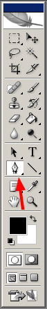
はじめのパスツールの設定は
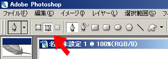
左上の設定部分がこのようになっているか確認してください。
用意が出来たらキャンバスにパスをかいてみましょう。
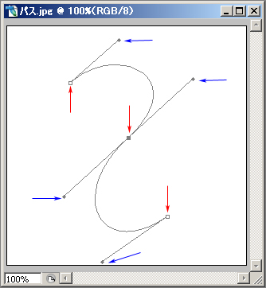
赤い矢印で指している点をアンカーポイントといい、
青い矢印で指している点をハンドルといいます。
クリックした地点にアンカーポイントができ、そのままドラッグをすると、ハンドルが伸びます。
アンカーポイントというのは必ず通る点で、
ハンドルは線がその点にひきつけられる強さ、になります。
いくつかの地点にアンカーポイントとハンドルを作ってみてください。
滑らかな曲線ができましたでしょうか。 (理屈でわからない人はとりあえずやってみるが吉)
さて、パス使って曲線を作れたが、何に使えるのかというと
・曲線をなぞって線を引く
・曲線の内側を塗りつぶす
・曲線をつかって選択範囲を作成する
などのことが出来ます。
どのようにやるかといいますと・・・
とりあえず任意のパスを用意します。
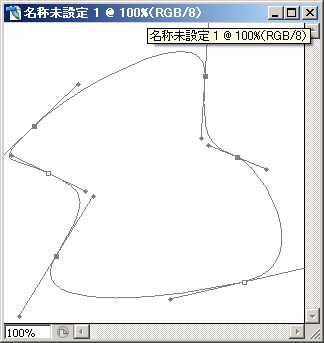
パスが用意できたら右クリックします。
すると、このようなメニューがでてきます。
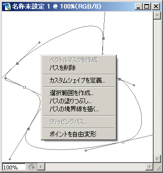
「選択範囲を作成」を選ぶと、
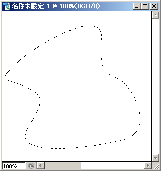
「パスの塗りつぶし」を選ぶと、
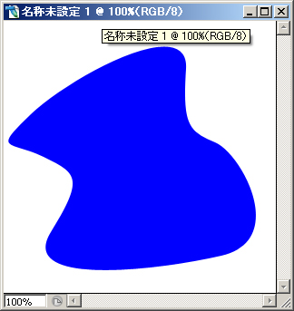
「パスの境界線を描く」を選ぶと、
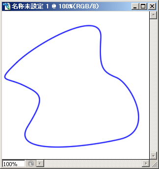
のようになります。
また、「パスの削除」を選ぶと現在あるパスを削除することができます。
ツールボックスのパスを右クリックすると
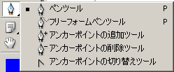
このようなメニューが出ます。
これらを使って、既にできているパスを編集することもできます。
このような状態のとき、
「アンカーポイントの追加ツール」で、
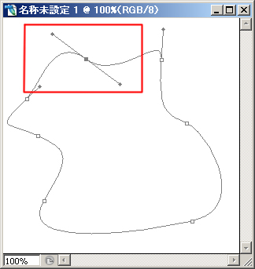
曲線の途中をクリック&ドラッグすることで、
このように、あたらしくアンカーポイントをつくることができます。
「アンカーポイントの削除ツール」で、
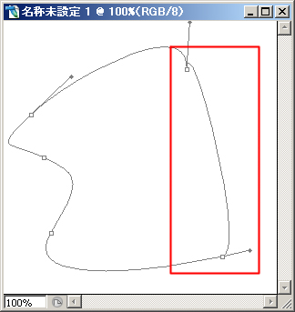
アンカーポイントをクリックすることでそれが削除されます。
また、「アンカーポイントの切り替えツール」は
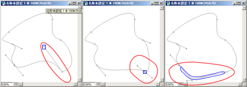
左から
バンドルをドラッグするとそのバンドルのみ、
アンカーポイントをドラッグすると、
アンカーポイントから伸びている2つのバンドルを、
曲線中でドラッグすると両極端のアンカーポイントの片バンドルずつを動かすことができます。
(青がドラッグする部分。赤は適当な動作場所。)
さて、パスはうまく使えるようになってきているでしょうか？
NEXT→